July 23, 2023
Zero hour
Russia is still running. Streetlights are on, coffee pots are hot, elevators are stuck between floors, and screens are still announcing flights. What has just happened will have a global impact.
Geopolitical thriller · Russia
This one begins at 03:14. And it doesn't end where you'd expect.
The novel
On July 23, 2023, in the early hours, Russia went dark to the world. There was no statement. No explosions. Only silence. While the world's powers try to work out whether the Kremlin is preparing a final move, a fisherman returns home to Murmansk.
The hours pass and Russia still doesn't respond. Satellite images show deserted roads, lit-up ports and cities frozen in the middle of the night. Some men will cross the border looking for answers. Others will try to hide them.
July 23, 2023
Russia is still running. Streetlights are on, coffee pots are hot, elevators are stuck between floors, and screens are still announcing flights. What has just happened will have a global impact.
War in Ukraine
The event happens as Russia is trapped in a war that isn't going the way the Kremlin imagined, more than a year in. Tension with Ukraine and NATO has already crossed every line of trust. Maybe the time has come to change strategy. Then the silence arrives.
International reaction
Washington, Kyiv and Beijing try to make sense of the impossible using tools built for human wars. In the first hours, every signal is read as a threat and every silence seems to hide a deliberate decision.
Biographies

Captain of the Vizhái
Captain of the fishing boat Vizhái. He returns from the Barents Sea to a country that's intact and empty. His journey doesn't begin as a mission, but as a search for family. He carries the most human part of the novel: the need to find an answer before even understanding the question.

Veteran sailor
A veteran sailor, quiet and hardened by decades of polar cold. His graying beard, his way of looking at things, and his economy of words make him an almost ancestral presence aboard the ship. He speaks little, but when he does, everyone listens.

First mate
First mate of the Vizhái. Young, impulsive and full of energy. His constant need to act before thinking will get him into trouble in a Russia where any mistake can become irreversible. Beneath his jokes is someone still trying to act as if the world hadn't changed.
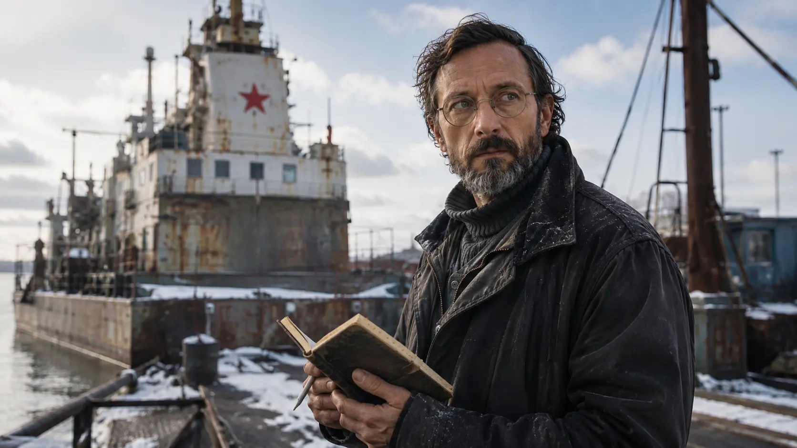
Practical survival
Although everyone calls him "the professor," he stopped teaching years ago. The economic crisis pushed him to leave the classroom and work on the Vizhái, where the cold and the sea paid better than any provincial school. A practical, dry and distrustful man, he represents those who learned to survive even before the world disappeared.
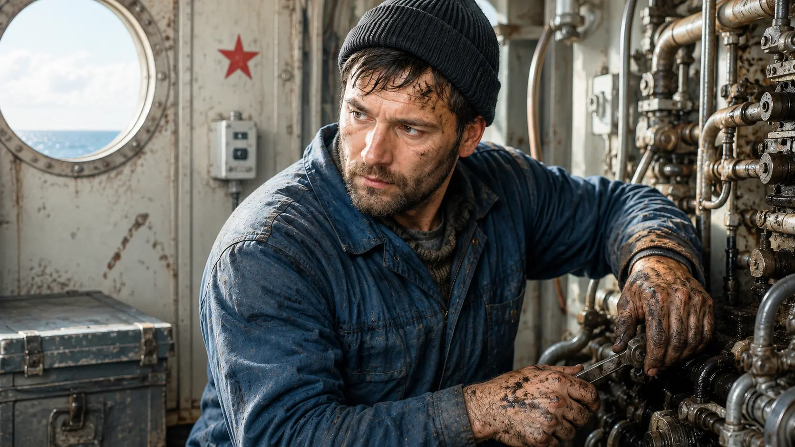
The Vizhái's mechanic
In charge of the engines and an expert in the Vizhái's mechanics. Everyone calls him Misha. He represents the classic Russian worker: tough, quiet and used to surviving without asking questions. His loyalty comes not from patriotism or ideas, but from something deeper: never abandoning his own.
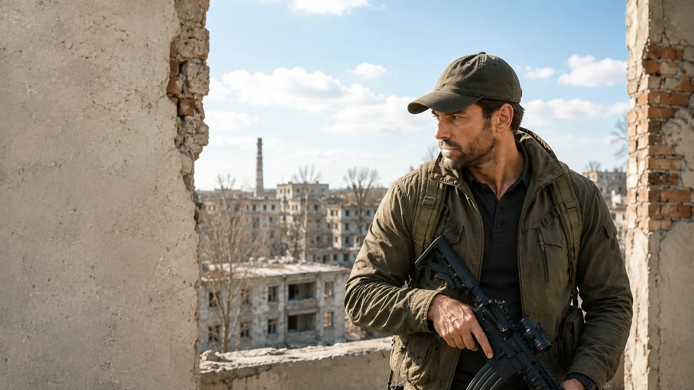
Special operations
An American Green Beret and veteran of covert operations that never made the papers. Sam Butcher is the man they call when a mission has to succeed even though no one can officially admit it happened. He has fought in Iraq and Afghanistan, carries physical scars and others that barely let him sleep, and has spent too many years going into places where war turns men into shadows.

Russian captain
Captain of the nuclear submarine Khabarovsk, one of the most dangerous strategic platforms in Russia's Northern Fleet. A respected veteran trained at the tail end of the Soviet school, Ramiev belongs to a generation of officers raised to withstand the end of the world without losing control. In the middle of the chaos, he represents the last line between military discipline and total collapse.
Settings
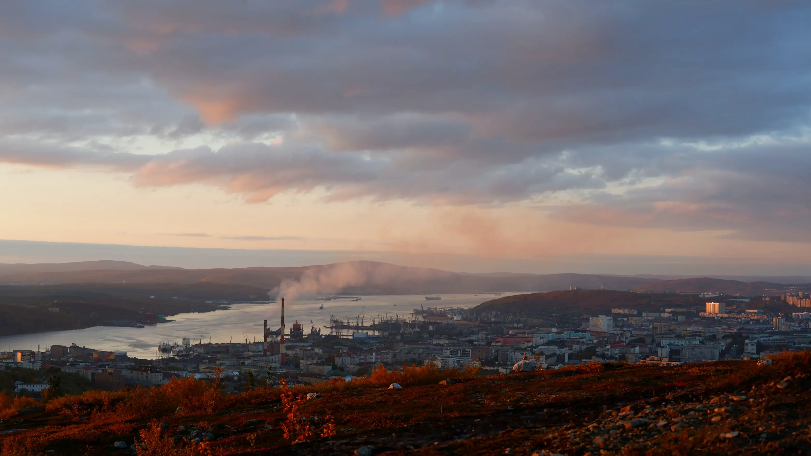
An Arctic port, home to the Northern Fleet and a gateway into Russia from the north.
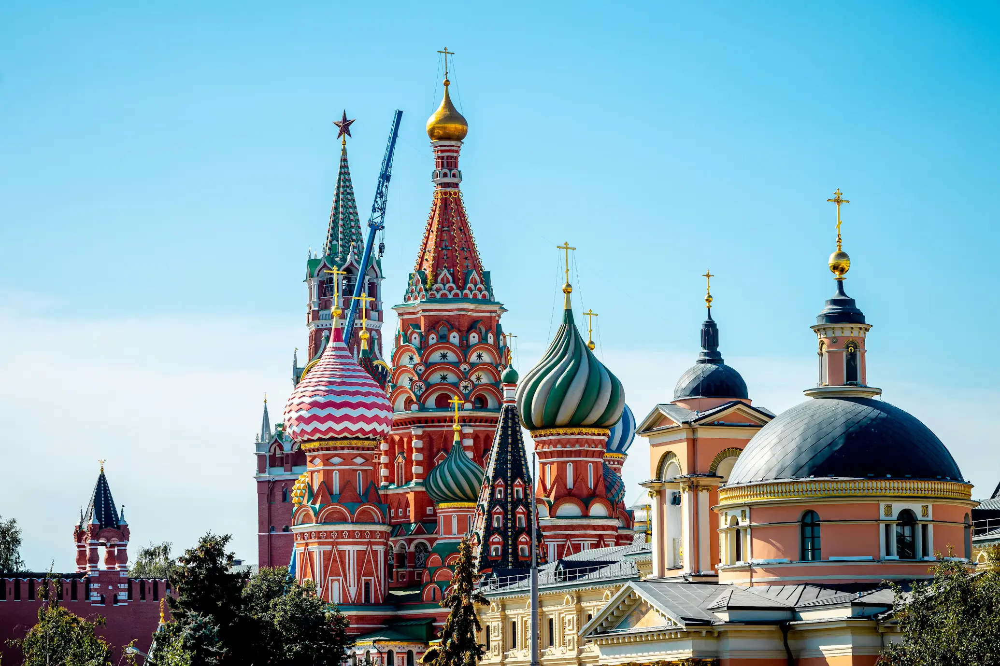
Russia's political center and seat of its government.
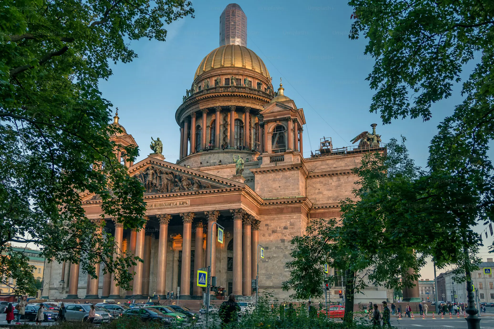
Imperial Russia, just a short distance from Finland. Famous for its white summer nights.
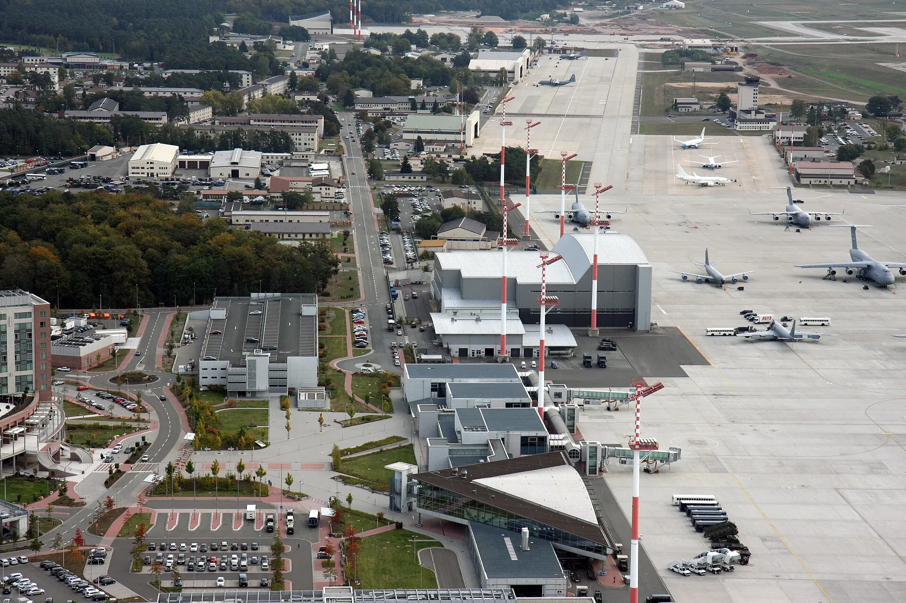
One of the main US military hubs in Europe and a key piece of NATO operations.
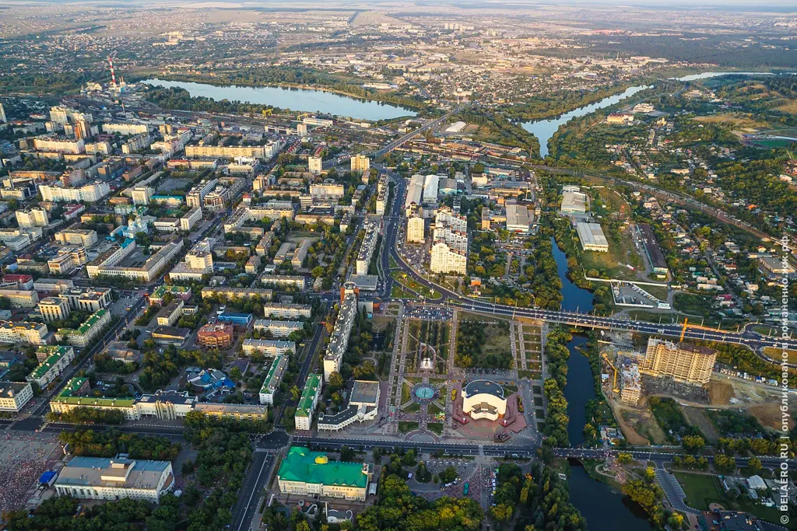
The most important city in the Belgorod region, on the border with Ukraine.
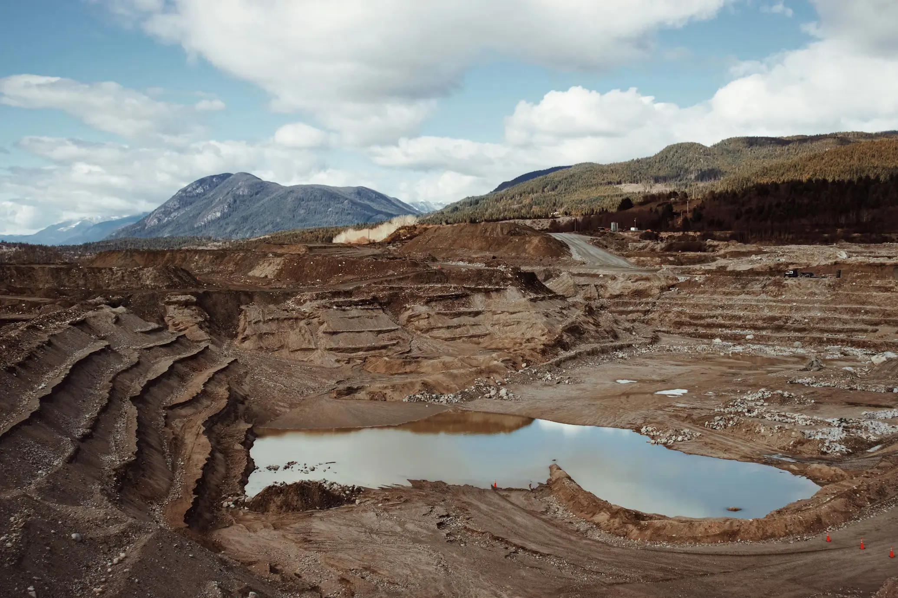
An open-pit mine on the Kola Peninsula. An industrial scar in the north.
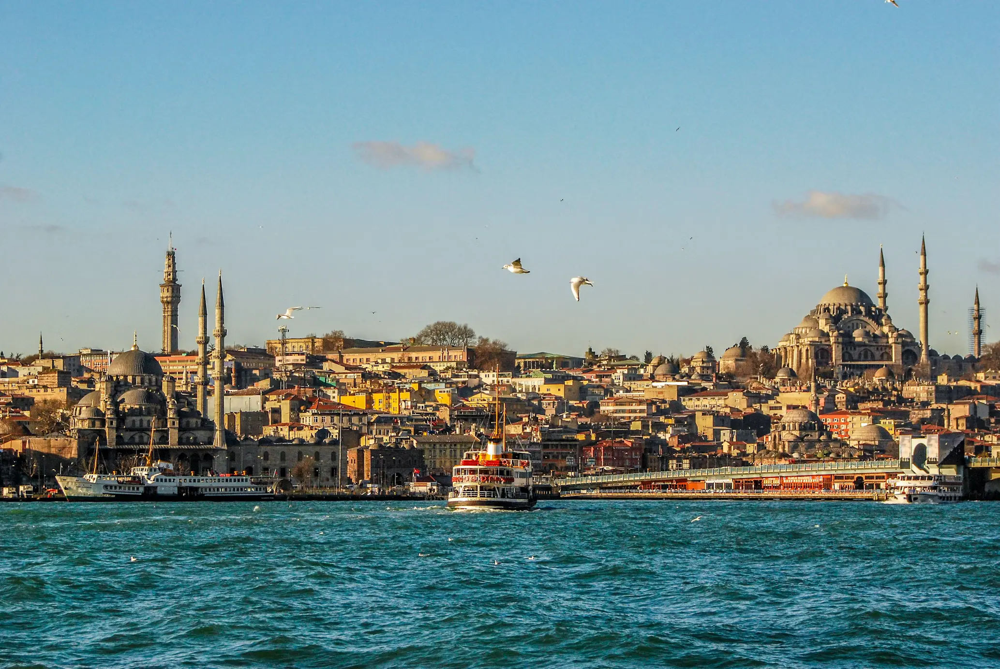
The crossing point between worlds. The gateway to the Black Sea.
Geographic dossier
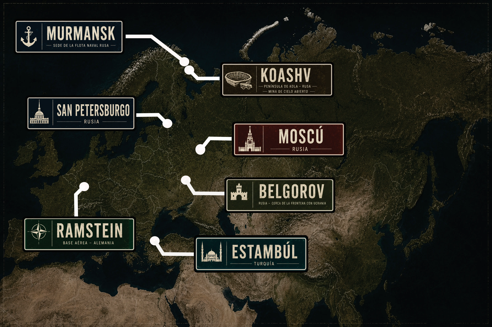
Video